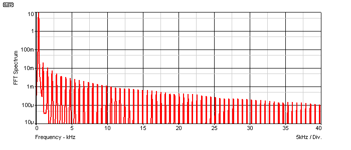

|
| Elliott Sound Products | Valves vs. Transistors (Part I) |
Valves vs. Transistors (Part I) - What are the differences?
Copyright © 2009 - Rod Elliott (ESP)
Page Created 10 Dec 2009
 Valves Index
Main Index
Valves Index
Main Index
The valve vs. transistor debate has been going ever since transistor amps first became available, and it shows no sign of abating any time soon. Guitar amp makers have been using hybrids - valves, transistors (and/or opamps) in various configurations for many years, with varied success. For those who prefer valve amplifiers, the choice is usually valve preamp and transistor output or vice versa. This arrangement is certainly cheaper and more reliable, but if someone really wants a valve amp, then that's what they'll buy.
Hi-fi systems are more complex, because the relatively high distortion levels of guitar amps are obviously not tolerable. This makes the design of a valve system far more complex, because obtaining the vanishingly low distortion and high power that are common now is not easy (or cheap) with valves. It can be done - AM transmitter modulators have used the largest audio amplifiers ever made, and valves are the only sensible choice for a single amp that can deliver perhaps 20kW or more. That it would completely fill the average listening room and cost as much as the house is something of a disincentive though.
A great many of the claimed differences are simply imagined, but there most certainly are many very real differences that are clearly audible in a blind test. The overall perception is that valves are "better", but this is generally not the case. It was a different matter in the early days of transistor amps though - the semiconductor devices themselves had some serious limitations. They were slow by modern standards, linearity was pretty poor (large gain changes with variations in collector current for example), and crossover distortion was not uncommon in low priced consumer audio products.
Despite these limitations, many of the high-end manufacturers managed to get results that were so good that they not only beat their previous valve models, but still stand up to scrutiny today. One of the biggest problems is the reliance of the buying public on hi-fi reviewers. Almost all reviews now are based solely on the results of a listening test - and I use the word "test" in its loosest possible sense. Technical tests used to be common, but are now passé, and the subjective review generally consists of hyperbole, opinion, and flowery language that conveys no actual usable information whatsoever.
There are noticeably larger audible differences between low quality and high quality valve amps. However there are negligible audible differences between the various high quality valve amps.
 | One of the most popular beliefs is that valve amplifiers have "nice" second harmonic distortion. The fact is that no distortion is nice because even (predominantly) second harmonic distortion also creates very "not nice" intermodulation distortion. The best examples of high quality valve amplifiers have extremely low distortion - below 0.1% in some cases. |
If you haven't done so already, it's worthwhile to have a read of preamps, Design Part 1 and Design Part 2 articles. While these are all quite technical, the three articles explain the basic principles that are needed to get a really good design working well.
There are some characteristics of valve amps that are very obvious - particularly those with little or no global negative feedback. Ignoring distortion for the time being, the first thing that you hear when a zero feedback valve amp is connected to most loudspeaker systems is that the music seems to come "alive". This happens because the valve amp has a relatively high output impedance, so the speaker behaves very differently from the way it performs with a transistor amp. This is usually a problem in reality, not a benefit. With no exceptions I can think of, loudspeaker systems are designed to be driven from a constant voltage amplifier (ie. an amp having an output impedance close to zero ohms). Many valve amps have an output impedance that may be several times the speaker impedance, so they approach constant current (ie. the output impedance is high - a perfect constant current source has an infinite output impedance).
The high output impedance allows the amp to behave somewhere between constant voltage and constant current. This may result in roughly equal power to the drivers, despite impedance changes. If impedance is made higher still, the power will increase at higher than normal impedance.
At bass resonance, the impedance of the woofer increases, and a transistor amp delivers less power. A valve amp will deliver roughly the same, or in some cases more power, so bass is accentuated. The same thing happens at higher frequencies where normally, less power is delivered. If a measurement is taken of the loudspeaker with both amps, it may measure flat response with a transistor amp, but will be anything but flat with the valve amp connected.
This is a test I've done many, many times, with many different people. Almost everyone thinks that the high impedance drive sounds better! It's only after listening to the system for a while that it becomes obvious that it's not right. Midrange might be "subdued", and low impedances around crossover frequencies can reduce the level dramatically, causing frequency response notches (sometimes referred to as a "suck-out" by reviewers). In general, the sound is rarely unpleasant though.

Figure 1 - Output Response of High Impedance Amp Into Speaker Load
As you can see from the above, the frequency response (red trace) tends to follow the impedance curve (green trace). You can see that the output voltage increases with increasing impedance, and falls with decreasing impedance. The simulated speaker for the graph is a sealed box two-way system, with a nominal impedance of 4 ohms. Source impedance was also 4 ohms. When an actual loudspeaker is driven with the same impedance, the response anomalies are very audible, but as noted above, are rarely unpleasant. It is certainly a sound that you can get used to hearing, and after a couple of weeks will sound completely normal. The voltage to the speaker varies by 6dB, but if the amp's output impedance were higher the voltage change would be higher too.
There is absolutely no reason that a loudspeaker system can't be designed to give a flat frequency response curve when powered by a high impedance amp. The problem here is that the loudspeaker will only work properly when connected to an amp with exactly the same impedance that the system was designed for. Since there are often wide variations with different valve amps (and it changes as the valves age), this approach is not economical - it can only be sold as a complete system.
This is one of the reasons that low output impedance was determined to be the best arrangement - and that decision was made long before transistors were even invented. Engineers had figured out that high impedance amplifiers were a nightmare for just this reason. They could just as easily have decided that perhaps 10 ohms output impedance was to be "standard", but the problems of woofer damping were already well known in the 1940s and 1950s. Only by driving a woofer with a low impedance could the bass be made accurate, without "overhang" - the bass note from the speaker extending for longer than the applied signal.
The specification for so-called damping factor has been with us for well over 50 years, although in the early days it was found that anything greater than 20 served no useful purpose (and this still applies even today). A damping factor of 20 means that an 8 ohm speaker should have a source impedance (from the amplifier) of 0.4 ohm. With careful design, this figure was achieved easily with many high quality valve amps. All but a very few transistor amps have output impedances that are measured in milliohms - much lower than really needed, but it's very easy to do.
The traditional way to reduce output impedance is to apply negative feedback. Valve amplifiers have significant phase shift at both high and low frequencies, largely because of the output transformer and coupling capacitors. By making very good transformers, valve amp designers have been able to apply enough feedback to reduce the output impedance to under 0.5 ohm. In order to be able to achieve low impedance, the valve output stage must be configured appropriately.
Figure 2 - Pentode or Tetrode Connection
The pentode or tetrode connection has the highest output impedance of all the valve output stage configurations. Distortion is also comparatively high. It is difficult to get output impedance low enough to be classified as voltage drive. This is the most common connection for guitar amps, because it has high gain, high output power (compared to the alternatives shown below) and predictable distortion characteristics. Very easy to drive to full power, requiring the lowest input signal to the grids.
With no feedback, pentode circuits can have an output impedance of over 100 ohms (referred to the 8 ohm output tapping). Beam power tetrodes are generally a little lower, but the difference is largely academic - the impedance is still rather high. Typical feedback ratios of perhaps 12dB or so will generally get the impedance down to about 8 ohms or so.
Figure 3 - Ultralinear Connection
Ultralinear operation applies some of the plate voltage directly to the screen grids. This lowers output impedance dramatically compared to pentode/tetrode operation, and reduces distortion. At high power levels, intermodulation distortion is actually lower than the triode connection. While power output is a little less than pentode/tetrode stages, it's usually not noticeable. This is one of the easiest circuits to drive, (second only to pentode), so drive requirements are not difficult to meet.
Figure 4 - Triode Connection
Triodes have a low output impedance, so after feedback is applied it's relatively easy to obtain an output impedance that meets the requirements for voltage drive. Intermodulation distortion is often quite high at close to full power. A very high drive voltage is usually needed, making preceding stages more difficult to design for low distortion.
Figure 5 - Split-Load Connection
Not many manufacturers used this arrangement, but Quad, McIntosh and a few others found that this (or other similar) scheme has very low output impedance, and is generally better than the ultralinear connection. The disadvantage is that because part of the load is in the cathode, the transformer is more difficult to wind, and therefore more expensive than other arrangements. Because of the winding in the cathode circuit, the grid drive voltage is also higher than the others shown.
There are also other arrangements - one Audio Research amp that I saw on the Net connects the cathodes of the output valves to the secondary of the output transformer, as well as using an ultralinear transformer. Whether the cathode connection to the secondary actually achieves anything useful is unknown.
While it's certainly not impossible to get very low output impedance from valve amps, it is far more difficult than with a transistor amp. High output impedance is generally preferred by guitarists. Although it's easy to do with transistor amps, there are many designs that use voltage drive - this is a mistake IMO, especially since it's simple to implement.
With no feedback, most well designed valve amps have a perfectly acceptable frequency response into resistive loads. At low power, it's fairly easy to get flat response from 20Hz to 20kHz, but when the amps were made cheaply for consumer items, the low end usually suffered - often badly. Even many properly designed amps would only have full power response down to about 30Hz, but at lower frequencies the amount of energy in typical programme material is very low, so provided response is flat it will perform fine.
By applying feedback, response could be made flat within less than 0.5dB across the audio band. However, feedback will not change the low frequency full power. If the transformer saturates at 30Hz at full power, all the feedback in the world won't change that. As shown above though, if the output impedance is too high, the varying impedance of the loudspeaker will cause the frequency response to change.
In general, there is very little difference in resistive load frequency response between a good valve or transistor amp, but a transistor amp will certainly go a lot lower at full power, and many get to 50kHz or more - again at full power. While neither extreme is generally useful in a full-range amplifier, it's easy to do.
As noted in other valve articles, the most common claim about valve amps is that they have "nice" second (or even) harmonic distortion, whereas transistor amps have "nasty" third (or odd) harmonic distortion. This is true in only the most limited number of cases, and is especially noticeable with single-ended amplifiers (which includes preamps). The fact is that it's not the order of the harmonics (odd or even), but how far they extend beyond the original frequency. High order harmonics (typically from the seventh and above) do sound relatively nasty, and that applies for both odd and even harmonics.
What this claim fails to understand (or recognise) is that harmonic distortion is accompanied by decidedly unpleasant intermodulation distortion. You can't build any amp that has second harmonic distortion but no intermodulation distortion (IMD). The two go hand-in-hand.
Well designed valve gear (of old) will have distortion levels of below 1%, and some below 0.1%. Once distortion is below the audibility threshold - which varies depending on the type of distortion and programme material - it doesn't matter if the amp uses valves or transistors. Inaudible distortion is, as its name suggests, inaudible. The technology that got you there is immaterial.
The situation is different for guitar amplifiers. Some degree of distortion is generally preferred, although not by all players. A valve amp will generally have a reasonably smooth transition from "clean" - only a bit of distortion, to "dirty" - lots of it. Depending on how well the preamp's gain structure has been tailored to suit the power stage, it is possible to get an almost seamless transition from clean to dirty. As the level is increased, the sound gets progressively more distorted, and as a result is also compressed. The compression effect is an important consideration for many players, because it increases sustain.
A normal transistor amp will have almost no distortion at all from the quietest playing right up to the onset of clipping. Distortion becomes audible suddenly, and the smooth transition of the valve amp is missing. The gain remains constant regardless of level until the amp clips, so there is much less sustain. This can be addressed in a number of ways, one being to include a valve in the preamp (the technique used in the Marshall "Valve State" amplifiers, for example). The same thing can be done without adding valves, but getting the smooth transition and progressive gain reduction is not especially easy.
A great many guitar amp makers have simply not bothered, and the amps may use opamps or transistors (in earlier types) that don't attempt to emulate a valve amplifier. Some of these are from major manufacturers, and their sales don't seem to be too badly affected - they are still making the amps with very similar circuitry to that used 10-20 years ago and are still in business. This leads me to think that some of the effects are too subtle for the majority of guitarists to hear. Others are much more discerning, and this is perhaps one reason why valve guitar amps have never gone away. Peer pressure and brand worship have helped to keep the technology alive, but it should have been allowed to die a natural death.
While some players are happy to use a sustain pedal and fuzz-box to get the sound they want, others expect it from the amp. Can it be done well in a transistor (or opamp based) guitar amp? Of course it can - it simply becomes a matter of working out what arrangement sounds the best (and making it variable). For some, it probably wouldn't matter if the end result was far better than anything heard in a valve amp, but they'd still want the valve amp anyway.
In this context, transistor can mean bipolar, junction FET (JFET) or MOSFET. While there are certainly differences between amps that use one form of semiconductor or another, they are usually inaudible. It will require a blind A-B test to convince many people that if well designed they do sound the same if they have similar specifications.
Virtually all major manufacturers stopped using valves once usable transistors became available. Several tried very early devices and they were commonly found wanting. Although they appeared to measure better than "equivalent" valve amps, they sounded worse. Things have come a long way since then, and although it's still possible to make a really bad transistor amp, no-one seems to want them. Strangely, really bad valve amps are popular in some quarters.
It is traditional that transistor amps have negative feedback - usually lots of it. There are several reasons for this, although some are not obvious. Valve amps have one endearing feature (which is also their downfall), and that's the output transformer. The entire amplifier can go up in flames (literally), but the speakers are protected from any DC fault that might occur. Because the transformer cannot pass DC, no DC can get to the speakers.
Modern transistor amps connect directly to the speaker, and a component failure can (and does) often cause the demise of an expensive loudspeaker. Because the amp is direct coupled, part of the job of the feedback loop is to maintain (close to) a zero volt output with no signal. With no transformer to buffer the load from the power supplies, this is an important function. It's generally desirable to maintain the quiescent (no signal) output voltage at less than ±100mV - the lower the better.
Transistor amps can be designed that will operate reasonably well without feedback, but there's really no point. Because there's no transformer, maintaining a low DC offset can be a problem. Many of the early transistor amps used a single supply rail, so the speaker was isolated by an electrolytic capacitor. While this solves the problem of DC offset, it's far more complex to design a transistor amp that will give good performance with no feedback, but relatively easy to design one that gives excellent performance with feedback.
Most transistor amps have output impedances that are so close to zero that even a short length of speaker lead can double the impedance. While there is no real point, in most cases it comes free - you don't actually have to do anything special to get a low impedance. Once feedback is applied, the already low impedance of the output stage is reduced to typically less than 100 milliohms (0.1 ohm) - most are much lower than that.
Since all commercial loudspeakers are designed to be driven by a voltage source - a very low impedance - it makes sense that they should be driven that way when you get them home. However, it's an easy matter to convert the impedance to something else. I've experimented with current drive (high output impedance) for many years, and have even tried negative impedance. Yes, such a thing exists, but it makes nearly all loudspeakers sound dreadful. For further information on this, see Effects Of Source Impedance on Loudspeakers.
When the output impedance of an amplifier is increased, it changes the loudspeaker's behaviour in exactly the same way as a valve amp might do. The advantage with a transistor amp is that you can select the impedance that suits you - it can even be made variable with a knob on the front panel if you wanted to go that far. It's pretty easy to make the impedance variable from about 0.1 ohm up to about 25 ohms, and I have a test amp that I use in my workshop system that allows me to do just that.
The basic arrangement is shown below. A current sensing resistor provides feedback to the amplifier that is based on current rather than voltage, although it's generally better to combine the two - voltage and current feedback. By doing so, you have the ability to determine how much of each type is used, so the output impedance can be set to a specific value. Working out the ratio of voltage to current is somewhat irksome, and will not be covered here. The voltage feedback path is shown inside the amplifier - this can't be removed or the amplifier would have no DC reference, so quiescent output voltage would not be zero. C1 is used to separate the AC and DC feedback paths - 100% feedback is used at DC.
Figure 6 - Transistor Amp With 4 Ohm Output Impedance
R1 is the current sensing resistor. Loudspeaker current flows through this resistor and generates a voltage across R1 that depends only on the current through the load. R2 and R3 are used to determine the mix of AC voltage and current feedback, allowing the amp's output impedance to be set for a specific value. For low frequencies, the output impedance can be 200 ohms or more if desired.
The net result of the impedance increase is exactly the same as any valve amp with the same output impedance. Response is no longer flat, and there is generally a lot more bass energy, although it is not fidelity. As noted above, the common reaction is that it sounds "better", but of course it's no longer accurate.
This is generally not an issue with transistor amps. With no transformer to restrict the low frequencies, it's entirely possible to amplify DC if you want to. It's completely pointless to do so, but there is no real lower limit for transistor amps.
High frequencies are sometimes a little more troublesome, but it's fairly easy to get full power at 20kHz or more. Like amplifying DC, this is also pointless, because the energy content of music is very low above ~8kHz - it starts tapering off from about 2kHz. Most transistor amps can produce ruler flat response from 20Hz to 20kHz, ±0.1dB at the most. They can do this into any load impedance within their ratings, and loads that vary with frequency have no effect.
Naturally, if the amp is made to have a defined output impedance, it will behave just like a valve amp with that same output impedance. This will cause the response to vary with the load impedance as described above. Doing so is rare with hi-fi equipment, but common in guitar amps. For dedicated systems, a defined impedance can be helpful to modify the behaviour of a loudspeaker.
In the early days of transistors, there would naturally be any number of people who would poo-poo the idea that these "new fangled" little things could possibly replace the valves that they grew up with. Not just replace, but render completely obsolete within a few years. Just as there are those today who insist that vinyl sounds better than any of the (new-fangled) digital audio formats, they will be ever vigilant to point out the smallest flaw - real or imagined. Strangely, no-one seems to have claimed that 78 RPM shellac discs are better than vinyl, or perhaps they are keeping very quiet.
Unfortunately, the nay-sayers had plenty of real ammunition. While there were obviously some very good early transistor amps, there were some real shockers too. One of the biggest issues was crossover distortion - the point where control of the output signal is passed from one device to the other. Because of the nature of this distortion, it may barely register on a distortion meter, so the figures looked excellent. Unfortunately, despite the meters saying that the distortion was low, listeners could hear the distortion - it was plainly audible, and sounded dreadful.
"Game over" said the valve enthusiasts. "Instruments can't be trusted, the figures are nonsense, therefore all measurements can't be trusted, so we'll just use our ears. No double-blind testing for us thank you - that's too stressful, and we want to be able to make assessments based on our feelings (at the time) and describe them using a thesaurus." Thus it has been for many years, with little chance of any change that might, possibly, resolve some of the arguments that have never gone away.
How could a meter get the distortion measurement wrong? It's a bloody meter - it measures what's there and ignores what's not. Unfortunately, not really. See Figure 7 for a waveform that shows the crossover distortion residual ... that signal which remains after the input signal has been filtered out. The distortion meter measures either the average or RMS value, which reads low because the spikes on the residual are often very narrow. In this case, the RMS value is 6.8mV, but the peaks are much higher at 25mV. The peak amplitude isn't normally measured, and many people to this day do not connect an oscilloscope to the output of the distortion meter. This allows you to see the exact nature of the distortion, and a little experience will allow the user to just look at the waveform and decide that it will either be audible or not. The meter isn't lying - the user is faulty! Many measurements have to be interpreted in electronics, and prior to the easy and cheap access to simulators, Fast Fourier Transforms (PC programs can do them easily) and digital capture and analysis, it wasn't always easy to ensure that the correct interpretation was made. As measurements become more sophisticated, the user has to be more vigilant than ever because it can be too easy to miss something important. There is a very big difference between knowing how to operate a piece of test gear and knowing how to use it.
The trace is the distortion residual - ie. the waveform after the fundamental frequency has been removed with a notch filter. When the left-over signal looks like that shown, you know that you have a problem, even if it's not audible due to background noise or a poor resolution monitor speaker. Crossover distortion gets worse as the signal level is reduced. It can often be heard quite plainly if a low-level low frequency tone is used (around 300-400Hz) - the amplified signal will have a discordant low-level buzz that's usually quite easy to hear.

Figure 7 - Transistor Amp Crossover Distortion
The above graph gives you some idea of how audible crossover distortion can be - the sharp transitions mean that the distortion has significant high frequency content. Although the level is low (less than 0.2% THD), if compared against a valve amp with similar or even worse distortion performance, an amp with this much crossover distortion will sound a lot worse. Part of the reason is shown below in the spectrum analysis. There were a few people in the 1960s who looked at the distortion residual on an oscilloscope, but far too few. Unless you look (or listen to the residual on an amplifier), you can be unaware that the 0.2% distortion measured is "nice" (low order harmonics only) or otherwise. While there has been a lot of study into the audibility of distortion based on the harmonic structure, for some reason it was ignored by many in the early days of transistor amps. A lot people would never notice of course - the general populace listens to music as a background activity, and any distortion may easily be missed.

Figure 8 - Crossover Distortion Harmonic Content
Figure 8 shows the harmonic content, which rather than doing the honourable thing and producing distortion components that diminish rapidly with increasing frequency, those from crossover distortion are odd-order, and tend to remain almost constant. They do roll off, but far too slowly, so there is still over 1mV of harmonic signal at 10kHz - and this is from a 318Hz source signal. To make matters worse, the crossover distortion residual signal does not diminish significantly as the level is reduced. While you might measure 0.2% distortion at full power, it will be a great deal higher at 100mW because the crossover component remains almost constant.
Why did many of the early amps show significant crossover distortion? That much is easy. Thermal stability of early transistor amps was often pretty poor, and if the amp were allowed to get hot it could get into a state called thermal runaway. As it get hotter, more current is drawn, so it gets hotter, until ... bang. To prevent this from happening, amps were often biased too low - they didn't get into thermal runaway, but had crossover distortion instead. This problem has been solved for many years, and modern power transistors also have much higher gain and are far more linear then the early devices.
It's considered by many that transistor guitar amps suck. While this can be true of many cheaper brands (in particular those made in China), many guitarists will happily use an amp that is fully transistorised (or uses opamps) right up to the output valves. Others have a valve front-end (either in whole or in part), and then use a transistor power amp. Neither qualifies as a valve amplifier in my books. If transistor front-ends and transistor power amps are Ok to use, then why not just combine all the transistorised bits and be done with it?
There are DSP (digital signal processor) systems that claim to be able to emulate the sound of any amplifier - valve or transistor, and you won't find many valves in the DSP. By one means or another, the dynamic distortion and signal compression abilities of a valve amp can be duplicated very well, and without resorting to a token valve in the circuit. Valve amp distortion comes with the valves, but with opamps and transistors (or DSP) you can adjust the circuitry to be as clean or dirty as you like - user selectable.
I remain at a loss as to why some guitarists won't even plug into a transistor amp to try it, yet will spend far more than necessary to buy a valve amp that is guaranteed to break down at the worst possible moment, and requires regular maintenance to keep going.
The distortion characteristics of a valve amp can be duplicated. It's not especially easy, and requires a lot more effort than may initially be apparent, but it can be done. Even the traditional hard clipping of a transistor power amp can be smoothed out to some degree, but this remains the final frontier. Ultimately, the speaker is expected to roll off at around 6-7kHz to reduce the upper harmonics. It that's not done, even a valve amp can sound dreadful when driven hard.
One of those things that isn't often looked at is the efficiency of the different amp types. In this context, it's not the conventional "watts in vs. watts out" efficiency that we're interested in, but how close to the supply rails the amplifier can get before it clips. Many people have found (or claimed) that a brand "X" valve amp provides a rated power of (say) 30W, but sounds just as loud as a 100W transistor amp. That's a 5.2dB difference, so the valve amp would indeed sound louder ... if it were true. Essentially, this is rubbish - it can do no such thing, although a more modest difference is very common.
This hypothetical 30W amp might operate from a 400V supply, which in turn might be provided via a valve rectifier. Power valves will rarely be able to pull the plate voltage below around 50-100V (depending on many design factors) at rated load, so the supply voltage is effectively reduced by this amount - the valve can't actually use it, so it's gone. The is the valve's "saturation" voltage, and it varies depending on many factors. Rectifier and transformer efficiency and regulation might mean that at full power, the supply voltage might fall by 10-15%, from 400V to perhaps 340V.
At full power into a resistive load, the valve plates are now supplied with 340V, cannot swing below (say) 80V, so the plate voltage is reduced from the maximum possible of 452V RMS to 368V RMS. The full power measurement will be done with the 368V signal, because that's the continuous power rating. This would give you about 16V RMS across an 8 ohm load - close enough. A high impedance load, such as a speaker at resonance, may be 30 ohms or more. With this light loading the supply might only fall by 5V, and the output valve can pull the plate voltage down to maybe 15V. The RMS plate voltage is now 537V.
| VP = ( Vsupply - Vreg - Vsat ) * 2 / 1.414 | (Where VP is RMS voltage plate-to-plate) | |
| VP = ( 400 - 60 - 80 ) * 2 / 1.414 | = 386V RMS (Rated impedance) | |
| VP = ( 400 - 5 - 15 ) * 2 / 1.414 | = 537V RMS (High Impedance) |
Converting that to secondary voltage, the amp delivers 16V into the rated load, but can deliver 22V into the speaker at resonance. 22V can easily be misinterpreted as being the voltage across the rated load - it's very common to measure a signal and work out the power that would be developed if the impedance were 8 ohms as expected. The difference is 3dB - the amp appears to deliver up to 60W into the higher impedance. With music playing through a loudspeaker, look at the oscilloscope to see the voltage peaks - they are usually noticeably larger that you measured when the same test was done using a dummy load.
The inefficient valve stage and poorly regulated supply make it appear that you can get an extra 3dB of amp headroom. Since most valve amps have a comparatively soft clipping characteristic, some peak clipping will be inaudible because they don't create a cascade of high order harmonics. If it's only transient peaks that clip, it may go completely unnoticed, regardless of the type of amp.
Now, compare the above with a 30W transistor amp. To obtain 30W into 8 ohms, the power supply will be about ±25V at full load. The losses in a transistor output stage are generally very low, typically a couple of volts (peak). Supply regulation is somewhat better because the valve rectifier is gone, but is otherwise similar. and the supply voltage at no load might be ±28V or so. The maximum voltage this amplifier can produce with no (or light) loading will be 52V peak-to-peak, or an "apparent" 42W if the voltage is assumed to be across an 8 ohm load.
With programme material and a loudspeaker load connected, the peak amplitude you will see is unlikely to exceed 25V, or an apparent 39W. Compared to the valve amp, this is well down - 2.2dB instead of 3dB. Neither amp can possibly achieve 10dB though - that's an apparent 300W output, requiring a voltage swing of ±50V across the speaker. Quite clearly, while there is certainly a difference between the two amps, it's not massive (0.8dB in fact).
When the transistor amp clips, provided it's only on the occasional transient, it will generally be inaudible, just as was the case with the valve amp. At one stage, the term "dynamic headroom" was specified to try to prevent silly power specifications like music power, peak (music) power and peak-to-peak (music) power. These were grossly inflated, bore absolutely no relationship to reality, and generally gave the industry a bad name.
Dynamic headroom was to be tested with a specified tone-burst signal, and a few specifications even included it for a while. It was realised by many that higher dynamic headroom numbers simply meant that the power supply was undersized, and was unable to provide enough continuous current to be useful. The term was eventually dropped, only to be replaced eventually with "PMPO" (peak music power output), a term that has no defined meaning at all. Suddenly 5W computer speakers were rated at 450W PMPO. The term is still around, and means no more now than it did 10 years ago. I recently saw a piddlingly small "home theatre" system rated at 6,000W PMPO - it would be unlikely to deliver more than 30W in total.
In general, well designed valve and transistor amps of the same rated power and similar specifications will sound just as loud as each other. There may be a very slight advantage towards the valve amp, but the overall difference is unlikely to exceed 1dB. Any claim that a valve amp sounds louder is generally wishful thinking, and will not stand up to scrutiny.
Valve amps generate heat, whether they are making music or just sitting idle. Whether you consider this to be a problem or not probably depends to some extent on your views on global warming (aka climate change) and whether or not your listening room is air-conditioned. None of this is relevant in the middle of winter. A typical valve amp may dissipate around 100W or more whenever it's turned on, and somewhat more if it's played loudly. Most transistor amps (Class-A excepted) dissipate perhaps 10-20W when idle, depending on output power.
While the heat itself may not be an issue (especially in winter unless you live in the tropics), everything in a valve amplifier tends to get hot - or at least very warm - when the amp is on for any length of time. This may reduce the life of components like electrolytic capacitors. Valves themselves have a limited life, which may vary from 1,000 hours to 50,000 hours, depending on valve type and how heavily it's stressed. Output valves certainly require regular replacement, and getting valves that work well is something of a lottery these days. Bias current also needs to be checked and adjusted periodically.
Transistor amps require no maintenance when used for home systems. Some amps might have fans, so cleaning filters is needed every so often, but most don't and there is nothing to do. In theory, there is no reason that a well engineered transistor amp can't operate for 30 years or more without the user doing anything at all to it other then turn it on and off as required. If it normally runs fairly cool, then no components are stressed in the slightest.
It's not at all uncommon for valve amplifiers (especially preamps) to be comparatively noisy. No valve can ever approach the noise levels that are commonplace with a well designed transistor (or opamp) stage. Typical noises from valve amps may include hum (possibly heater to cathode leakage), and a hiss level that may be audible from the listening position in some cases. Crackles, pops and farts can also be a problem - high voltages and high impedances make a circuit very susceptible to the smallest amount of leakage. This may occur in any insulating material, including capacitor dielectrics. Resistors make noise too, and the amount of noise is proportional to the resistance and the applied voltage.
By comparison, most transistor amps are (or should be) completely silent. You may be just able to detect some hiss from the tweeter if you place your ear very close. Otherwise, noise levels should be undetectable from the listening position. In reality, both valve and transistor systems will normally have noise levels below the ambient background noise, so it should not be a problem with typical loudspeakers.
Valves are often microphonic, and pick up vibration only to re-amplify it. You should be able to tap any valve in the system with a pencil, and not hear anything, but this is uncommon. Most valve preamps will show microphony, particularly the first valve when the gain is high. Whether this is a problem or not can only be determined by testing and experimenting - for home systems it's unlikely to be an issue unless very high gain preamps are used (phono preamps for example).
Needless to say, there's a veritable army of people on the Net and in your local hi-fi shop who can sell you the latest magic stone, anti-vibration rubber rings for preamp valves, isolation bases with real granite or marble and rubber feet made lovingly by hand by spiritually complete monks from the outer reaches of Mongolia. Add to this various gizmos that (allegedly) use quantum physics to magically separate noise from signal and remove the bits you don't want to hear. Some will have an effect (good, bad and indifferent are equally possible), others will do nothing at all except make you look like a goose for wasting money on something that can't possibly work (and doesn't).
Other than eventual mechanical failure, most transistor amps can tolerate intolerable amounts of vibration, and not make any unwanted noise whatsoever. It's preferable that excessive vibration be avoided, but no special precautions are needed. Amps and preamps can be placed where they suit ... avoiding induced hum from power transformers of course, and that applies to valve gear too. Microphony is almost unheard of in transistor equipment. Most can be tapped with a pencil or smacked with a shovel¹, without any noise from the speakers. Magic rocks and all the other paraphernalia are simply wasted on transistor amps, and are best avoided.
1 - I don't wish to imply that smacking your audio equipment with a shovel is a good idea, and in general it's a practice that I strongly discourage.
In some cases, people like to spend money on handsome stands or racks for their audio equipment, and if they happen to have vibration isolation it certainly won't do a transistor amp the least harm. Problems are created when people are told that they must have this or that accessory when it will do nothing useful.
Other than overdriven guitar amps, there should be no audible difference between equivalently good quality and properly engineered equipment, regardless of whether it uses valves, Nuvistors, transistors, opamps, MOSFETs or any other amplifying device. The general requirements are the same, and differences should be below the limits of audibility.
Even for guitar amps, most of the things the valve amp does can be emulated fairly successfully, although the (often) limited bandwidth of the output transformer is difficult to duplicate easily. Transistors have a major advantage when driven to hard clipping, because power dissipation is very low. Valve amps dissipate considerable power when clipping, with pentodes (such as the EL34) suffering the most - primarily due to high screen grid current. Valve and transistor amps do have different clipping behaviour, but although the two are very different from each other, many players will not be able to tell which is which in a blind test. It has even been suggested that some players like the 100/120Hz hum modulation that is typical of amps that are driven into clipping but have inadequate supply filtering (this gem came from a Marshall service note). I don't see it as being very likely, but transistor amps can do that too.
Whenever possible, you need to do a blind A-B test to decide if there is any difference between any two amps of similar specifications. If so, then it's up to you to decide which is better. Without the blind test, you are too susceptible to suggestion to make an informed judgement. Unfortunately, reading reviews generally doesn't help at all, because no magazine or website that has paid advertising will jeopardise their ad revenue by saying that the company's products are a pile of junk.
So, which is "better"? Neither - both valve and transistor equipment is often capable of as good or better performance than the equipment used in many studios. Should your material be "blessed" by a mastering studio it's probably been compressed to within an inch of its life, often with equipment that's chosen for its sex appeal or status, rather than anything tangible (such as performance).
Ultimately, if you do hear a difference between a valve and transistor hi-fi amplifier, one of them is outside the normal parameters that we expect of good quality audio gear. It could be faulty, or is deliberately designed to heighten something that is claimed to be "good" - typically much higher levels of low, even order harmonics than we are normally used to hearing, as well as a higher output impedance than is considered acceptable. While such systems may well sound "nice" under some conditions, it's not hi-fi, and will usually be incapable of the overall clarity that is defined by the term "high fidelity".
Naturally, the choice is the buyer's to make, but reviewers of SET amplifiers in particular wax lyrical about the wondrous sounds they heard. Apparently, anyone who doesn't use a SET amp is "missing out" on the pleasure these systems allegedly bring. No, people who don't use SET amps are missing out on higher than normal output impedance, colouration, harmonic and intermodulation distortion and regular maintenance of expensive underpowered amplifiers, and all this for prices that in many cases are just plain silly.
Personally, I don't see that as missing out on anything - to not have these issues is a huge benefit.
Valves Index
Main Index